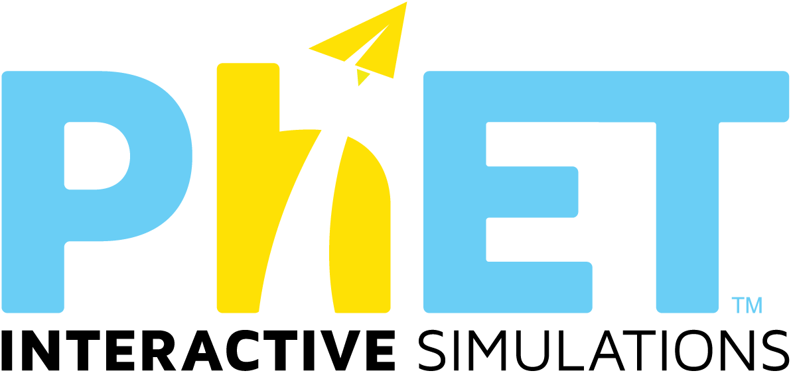

Unidad 2
Simuladores

Repositorio educativo: Phet
Objetivo
Conocer la plataforma Phet Colorado por medio de la búsqueda y contextualización de simuladores para la presentación de estos al grupo curso.
¿Qué características tienen los simuladores?
¿Qué ventajas y desventajas tienen los simuladores?
Desafío 1. Crea una cuenta en Phet-Colorado
https://phet.colorado.edu/es/
Desafío 2. Encuentra en phet colorado un simulador asociado a algún OA de matemática o ciencias-Física
No pueden haber dos OAs iguales, usaremos la nomenclatura FIS-2M-OA3 o MAT-7B-OA14 para no repetirnos en la pizarra
Desafío 3. Completen una slides del gslides "Repositorio Educativo Phet" en ucursos.
En el título
- Nombre del simulador con su respectivo hipervínculo
- Código (Asignatura, curso y OA)
En las notas del orador:
- Limitaciones encontradas
- Nombres del equipo
En el cuerpo
- ¿Con qué estratégias o instancias de la clase lo usaría? (modelamiento, práctica guiada, práctica autónoma, evaluación, otra?
- ¿Cómo el uso del simulador mejora la experiencia de aprendizaje en comparación a no usarlo?
Presentaciones Blitz: Uno del equipo presentará en 2min el simulador escogido
Repositorio educativo: Phet